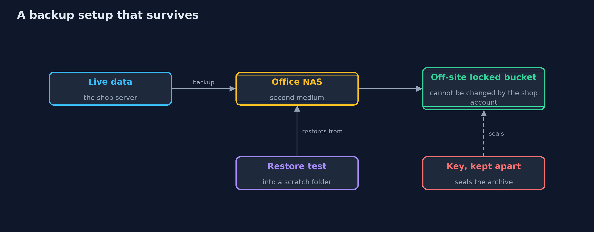
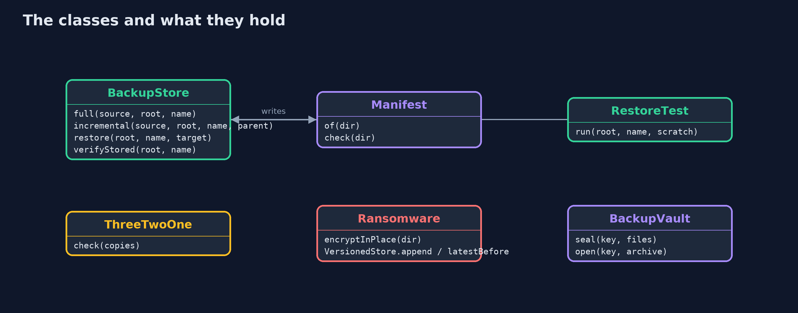
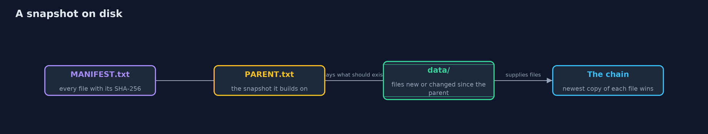
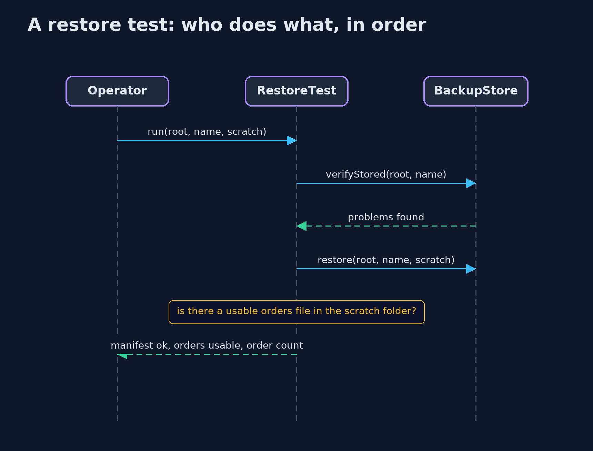

Backups and Recovery
src/main/java/com/jk/explore/security/backups/
├── BackupStore.java A folder of snapshots
├── BackupVault.java A backup is a copy of every secret in the system, so the archive is sealed with AES-256-GCM and its key lives apart from it
├── BackupsDemo.java Runs the online store story in five numbered acts and prints exact, repeatable results
├── Manifest.java A list of every file in a folder with its SHA-256, one "hash path" line each: the backup's own record of what it should contain
├── Objectives.java Recovery point objective and recovery time objective, worked out from a timeline in minutes since midnight
├── Ransomware.java What ransomware does to files it can write to, and the copy it cannot: a store that only ever adds new versions
├── RestoreTest.java A restore test: restore into a scratch folder and ask the application's own question, "is there a usable orders file?"
├── Retention.java Which daily snapshots to keep: the newest few days, the newest few Sundays, and the first snapshot of each of the newest few months
├── Sha256.java SHA-256 as lower-case hex: the fingerprint a manifest records for each file
└── ThreeTwoOne.java The 3-2-1 rule as a checker: three copies of the data, on two kinds of media, one of them off site (and, today, one that cannot be changed)
Backups are what turns a disaster into an inconvenience, but only if they are complete, checked by a real restore, kept where ransomware cannot reach them, kept long enough, and sealed like the secrets they are.
Every other defence in this repository tries to stop something going wrong. A backup is for when it does anyway: a mistake, a failed disk, a fire, or ransomware that encrypts everything it can write to. A good backup has a few properties. It is complete, which a manifest of SHA-256 fingerprints helps to prove. It has been restored at least once, because a backup that cannot be restored is not a backup. It follows the 3-2-1 rule: three copies, on two kinds of media, one of them off site. It includes a copy that the shop's own account cannot change, because ransomware encrypts every backup it can reach. It is kept for as long as it is useful and no longer, by a retention policy. And it is sealed, because it contains every customer's data.
The demo makes full and incremental backups of an online store's files, damages them, grades two setups against the rule, prunes 400 snapshots, runs a ransomware attack, works out how much work a failure loses and how long recovery takes, and seals the archive.
The idea in everyday terms
Think of a fire drill. Having a plan is not the same as knowing it works: the exits turn out to be locked only when the building is full of smoke. A backup that has never been restored is the same, a plan that looks fine on paper. A copy in the next room of the same building is gone in the same fire, and a copy kept in a cabinet that any thief can open is a second way to lose.
The scenario
An online store keeps orders, customers and stock in files. The demo takes backups of them, finds damage by comparing fingerprints, discovers a backup that cannot be restored, grades two setups, prunes old snapshots, lets ransomware loose on the shop and its mounted backup folder, calculates what a failure costs, and seals the archive.
Run
./gradlew run
The demo tells the story in 5 acts, each printing exact numbers that the tests check:
| Act | What it shows |
|---|---|
| 1. Full and incremental backups, with a manifest | A full backup stores 3 files, an incremental one only the files that changed, and the day 3 state of 4 files restores from the chain with no problems. |
| 2. Can the backup be trusted? Only a restore test says | A changed byte and a deleted file are both found from the manifest, yet a backup that skipped the orders file passes the manifest and fails the restore test. |
| 3. The 3-2-1 rule, and how long to keep backups | A second folder on the same server scores 0 of 4 against the rule while a server, a NAS and an off-site locked bucket score 4 of 4; 400 snapshots shrink to 21. |
| 4. Ransomware, and the copy it cannot change | Ransomware encrypts the shop's 3 files and the 3 files in the mounted backup folder, but a store that only adds versions restores every original, and read-only files stop it only until the same user changes them. |
| 5. How much can be lost, how long it takes, and backups as secrets | A nightly backup loses 13:30 of work, about 162 orders, and takes 01:55 to recover, an hourly one loses 6; the archive is sealed with AES-256-GCM and a wrong key is refused. |
Test
./gradlew test
18 tests in BackupStoreTest, DemoRunsTest, PoliciesTest. SHA-256 is checked against the published value for "abc". Backups are files in a temporary folder, the clock is simulated, and keys and nonces are random but never printed, so the golden output is the same on every run.
What the simulation got right, and what it left out
All backups are files in a temporary folder, and the clock is simulated, so the demo is exact. Keys and nonces are random, so the demo prints only facts that do not depend on them. SHA-256 is checked against the published value for "abc". File permissions are the POSIX ones that macOS and Linux use, and a true write-once store needs a storage service, so it is modelled by a store that only adds versions.
Technologies and versions
Every version below is pinned in the project's build files and was the latest stable release when the project was built.
| Technology | Version | Used for |
|---|---|---|
| Java | 25 | the language and runtime; a Gradle toolchain finds or downloads the JDK |
| Gradle | 9.8.1 (wrapper) | build and run; nothing to install, the wrapper downloads it |
| org.junit.jupiter:junit-jupiter | 6.1.3, set by junit-bom | JUnit 5: the tests (tests only) |
| org.junit.platform:junit-platform-launcher | 6.1.3, set by junit-bom | JUnit platform launcher, which Gradle needs to run the tests (tests only) |
| videokit | repository tool (tools/videokit) |
the narrated video and animation: Piper en_US-amy-medium, speed 0.8, longer pauses (the amy-slow voice) |
Learning Material
| Document | What it is for |
|---|---|
| Problem statement | the situation and what the project must show |
| Prerequisites | what you need to know first |
| Backups and Recovery, explained | the acts in prose |
| Session guide | a one-hour lesson with exercises |
| Animated walkthrough | the acts step by step, narrated |
| Threat model | what is protected, who could harm it, and how, using STRIDE |
| Spec | what this project must be true of |
| Expected output | the golden demo output every test and every port checks against |
The idea in one picture
Three copies on two media, one off site and unchangeable, each checked by a restore test, and the archive sealed.

Where each piece sits
BackupStore makes snapshots with manifests; the other classes judge, protect and measure them.

How the data moves
A snapshot holds a manifest of the whole state, a pointer to its parent, and the files it stored.

Who calls whom, in order

Video
video/backups-and-recovery-explained.mp4 (with .m4a audio and .srt subtitles) is built by video/build_video.sh. Rendered media is not committed.
What it costs
- Backups cost storage, time and attention. Incremental backups are small but need the whole chain to restore, and every copy is one more thing to monitor.
- Restore tests cost effort. They take time and a scratch environment, and they are the only way to know. Schedule them.
- A backup is a copy of every secret. Anyone who can read the backup can read the data, so it needs encryption, access control and its own key management.
- Immutable storage is not free. Data cannot be deleted before its retention ends, even by mistake or on request, which has to be reconciled with rules about deleting personal data.
- The demo is small. It shows the ideas with files in a folder. Real systems add databases that must be backed up consistently, object storage with object lock, and backup products.
When this is too much
Every business that has data it cannot recreate needs this. How far to go depends on the recovery point and recovery time it can afford: a shop that can lose an hour of orders is a different problem from one that cannot lose one.
Where you have already met this
rsync,restic,borgand cloud snapshot features.- Object lock and write-once storage in cloud object stores.
- Disaster recovery plans and "RPO" and "RTO" in service agreements.
- News stories about ransomware that also took the backups.
Where this sits
This project is the third in safe-habits, after least-privilege and patching-and-dependency-hygiene. It uses the key habits from keystore-basics to protect the archive.